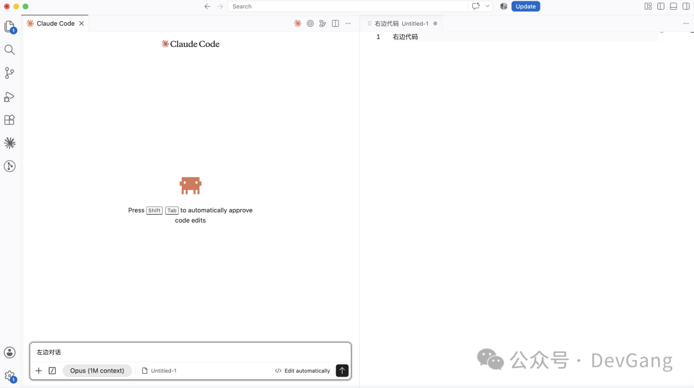

本书作者：测试开发刚哥，文章版权归个人所有，未经授权请勿转载。
Claude Code是Anthropic公司的产品，跟字节的豆包、阿里的千问和腾讯的元宝一样，只不过它更擅长于跟代码打交道。用Claude Code来写代码，就是通常说的Vibe Coding，跟着感觉编程。
Claude Code交互
一般有3种交互方式，命令行、Pycharm / IDEA插件、Visual Studio Code，我最喜欢第三种，界面设计、操作丝滑、多模态。
Vibe Coding，是以对话框的形式为主的交互方式。我们习惯在界面左边放代码区，然后右侧边小窗口放claude对话框。现在，需要反过来：

我们不再需要写代码，只需要在对话框告诉AI我们的想法，它来写。
重点说下VS交互，可以同时开多个Claude窗口，查看历史对话，复制粘贴图片等，视觉效果和操作流畅度，都是体验最好的。毫不夸张地说，正是Visual Studio Code让我把Claude Code玩得溜。
最重要的是输入
Claude可以写代码，写文档，配置环境，排查问题。前提是你要准确告诉它你的想法。如果实在描述不清楚，可以切换到Plan模式，让它来采访你。记住Claude是有上下文的，一次没说清楚，可以持续补充。熟能生巧，你的想法只有你知道，在使用中持续提升。现在AI越来越高级了，当你说的不清楚，它还会找你确认细节的。不用太担心。
AI不是人
你不用跟ai说，请你帮我XXX、你能不能XXX、看一下XXX。AI不是人，不用那么焦虑的和它对话，它只是一个机器，一个普通的工具，直接命令它干活。
把你的电脑交给Claude Code
跟龙虾类似，Claude Code也可以直接操作你电脑的所有东西，比如VS的快捷键配置直接告诉ai把ctrl + c设置为打开claude新窗口，它会自动给你完成。其他的安装软件、解决环境问题和本地文件操作，它都可以做。
写脚本还是写平台
刚开始我发现claude可以写web平台，一股脑把现在的小工具全部做成了网页，实际使用下来发现，有些工具还是Python脚本用起来顺手。当你使用Claude写Python脚本的时候，你就能感受到自动生成代码的快乐。
SKILL和MCP
不要自己写skill，不要自己写mcp，这些都交给claude。Vibe Coding的精髓就在于，不要自己动手，只管验收最终效果。也可以让对话框A来写，对话框B再来检查和优化。
对话框
最关键的我认为是交互方式的思想转变。很多时候我们不需要在页面点点点，也不需要执行Python脚本，而是让claude去完成这些事情，在对话框里跟ai交互。我80%的时间都是在对话框用自然语言和ai交互，让它生成和执行某些脚本，打开浏览器抓一些数据，汇总某些信息。“少动手，多说话”，你就能事半功倍。
发现问题，解决问题，工作效率自然就能提高。